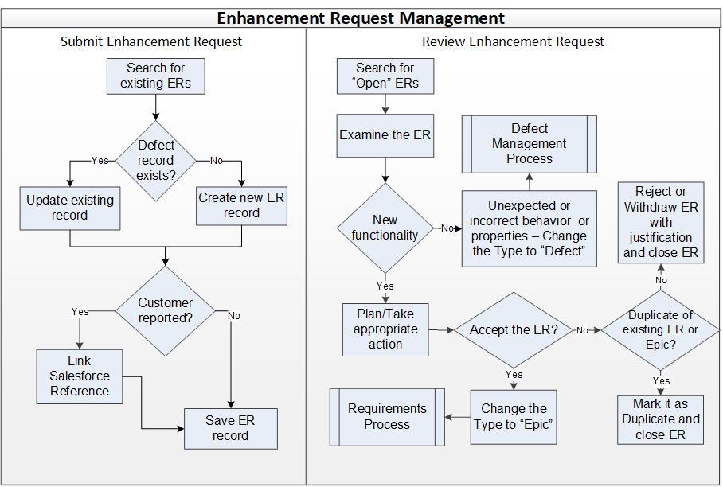

Enhancement Request Management Process¶
The purpose of the Enhancement Request Management procedure is to evaluate Enhancement Requests (ER) in the Defect Management Tool (e.g., Jira) as possible requirements. ERs are regularly reviewed and evaluated at Enhancement Request review meetings. The meeting’s purpose is to review ERs that are new in the system, as well as existing ones that are still under discussion.
The Customer Service Organization (CSO) is responsible for submitting the ER and holding review meetings.
Entry Criteria |
An ER has been found and is in Status “Open” |
Inputs |
ER record in the Defect Tracking System (e.g., Jira) |
Exit Criteria |
The Enhancement Request record Type changed to “Epic” or “Defect” |
Outputs |
Updated Enhancement Request record
|
Stakeholders¶
Role |
Responsibilities |
Customer Service Organization |
Responsible for Submitting the ER and holding review meetings |
Key Stakeholders / Scrum Team |
Key Stakeholders (Product Manager, Engineering Manager, Technical Feature Owner) and/or Scrum team are responsible for reviewing the ER. |
Activities¶

Step # |
Activity Name |
Description |
|---|---|---|
1 |
Submit enhancement request(s) |
When an ER is requested, before creating a new record, search the Tracking System (e.g., Jira) to see if an ER has been filed before for the same issue.
These additional fields should also be filled in, if known:
|
2 |
Review enhancment request(s) - Search enhancement request(s) |
Identify new enhancement request (ER) record(s) by reviewing e-mail notifications from the Defect Tracking System (e.g., Jira) or running queries. Identify relevant enhancement request records in Status “Open” |
2a |
Review enhancment request(s) - Examine the enhancement record |
Review the Summary and Description to determine if it describes:
|
2b |
Review enhancment request(s) - Plan and take appropriate action |
Determine the appropriate action:
|
Change Log¶
Date |
Change Request ID |
Version |
Change By |
Description |
04/29/2020 |
N/A |
0.1 |
Shree Vidya Jayaraman |
Initial Draft |
06/11/2020 |
N/A |
0.2 |
Shree Vidya Jayaraman |
Updated based on the feedback from Martin. Converting this into a procedure instead of process. |